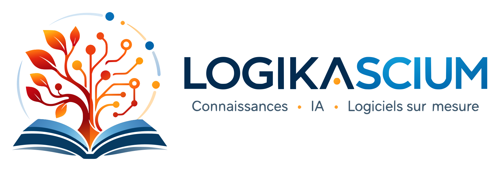
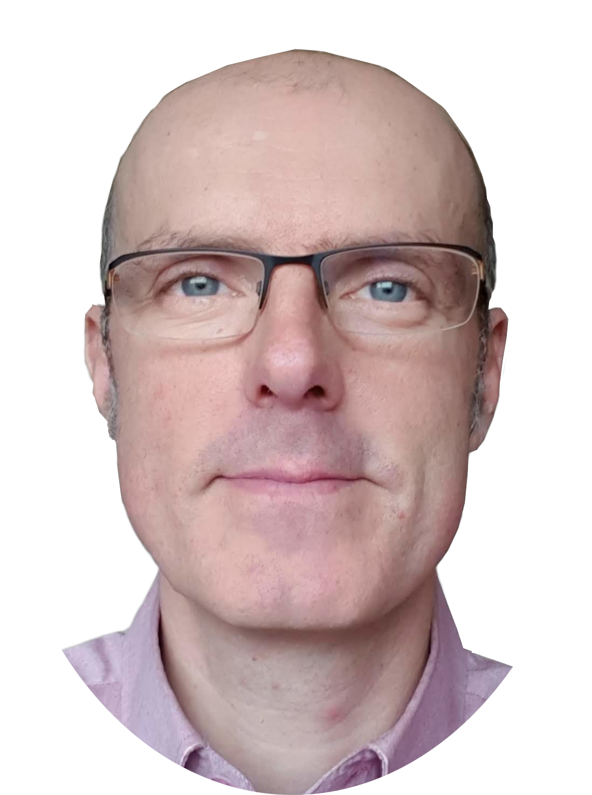

Logikascium prend en charge toute la chaîne de la connaissance : numérisation, curation, organisation, traduction, automatisation, exploitation par l'IA, sécurisation et diffusion, sur le socle ouvert OSIA. Nous développons aussi Kunereti, un outil de délibération répartie sans serveur central. Cette page a besoin de JavaScript pour afficher son contenu ; les notes publiques restent lisibles sur GitHub. Contact : michaellaunay@logikascium.com.
OSIA
SemGard
Biblioteko
